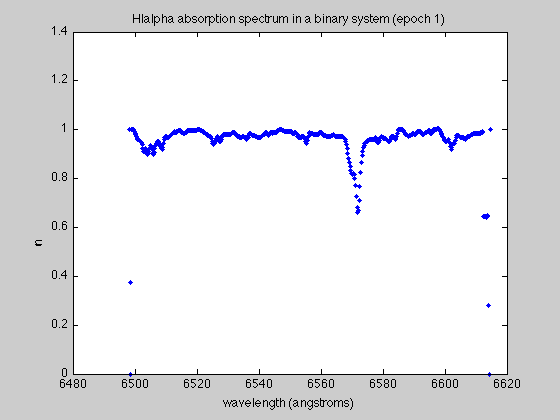

Binary Stars and Stellar Masses
In this lab the student uses spectra taken at 7 times for a binary star system for which one can identify the Halpha absorption line and obtain from it a radial velocity measurement. The student then uses measures of shifts in the absorption line wavelength in order to determine the total mass of the binary system.
Contents
Loading Data
First we must load the 7 spectra from this spectroscopic binary containing the absorption lines which we will use to determine orbital period.
load('binary1.dat')
Now there are seven matricies, binary1, etc, containing two columns: the first gives the wavelength in angstroms for the spectrum and the second gives a normalized flux. Let's plot one of these spectra:
figure(1); clf plot(binary1(:,1), binary1(:,2),'.') xlabel('wavelength (angstroms)') ylabel('normalized flux') title('HIalpha absorption spectrum in a binary system (epoch 1)')